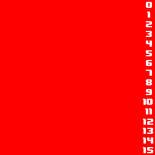
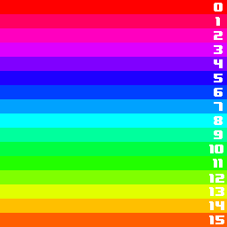
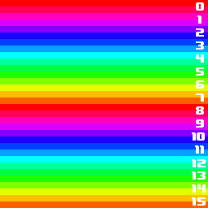
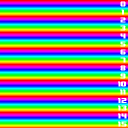
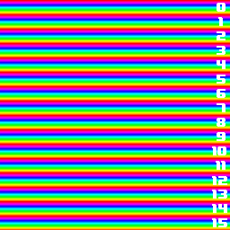
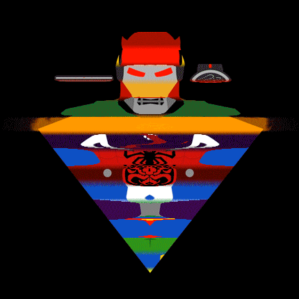
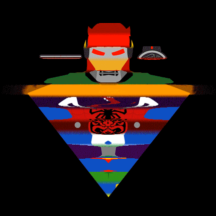
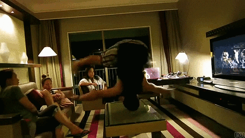

Timeshifter
A tool to make a Timeshift effect on animations/gifs/videos.
TimeShifter Examples
Rainbow Gif
 
Input: 16 frames, cycles trougth the rainbow (256x256px)
Output: 16 slices, 16px per slice.
Slices
By default timeshifter will make as many slices as frames in the animation, but you can alter it that to create different effects.

32 slices, 8px per slice || 64 slices, 4px per slice
 
128 slices, 2px per slice || 256 slices, 1px per slice
Practical Examples
Morph
Notice how each slices is basically running the animation in the same order and place, just shifted.
 


The first one is the original, the second has 1px slices, while the 3rd and 4th have 16 and 32 slices respectively
Spin
Things spinning make good subjects, even more if they are already cycled.

Support or Contact
Having trouble with Pages? Check out our documentation or contact support and we’ll help you sort it out.